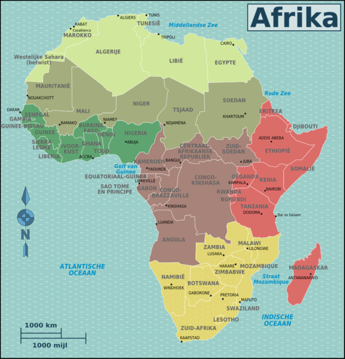
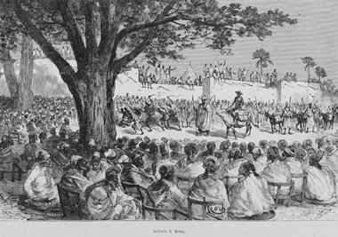

 The country that I now referring about now goes back to a period called the Sibellian Period. Sibellian I brings us to a period where you will find hieratic writings, the type that no one in modern times has been able to decipher. Sibellian II existed about 25,000 years before the birth of Jesus-the Christ. Sibillian III would bring us to about 10,000 B.C.E., in which we now have the Stellar Calendar, and the pre-dynastic period will be considered from the same, 10,000 to 6,000 B.C.E., and that is the point when High Priest Manetho, in about 227 or 226 B.C.E., attempted to present for the Greeks, who had imposed upon him to write a kind of chronological history of the Nile Valley. Europeans, instead of saying what Manetho said in his chronology of the history of the Nile Valley, forget to say it was at the end of the Nile Valley he addressed. For example, the "First Cataract," i.e., an obstruction in the Nile River, is at a place called the City of Aswan, when in fact it is the last; the "Sixth Cataract" is in fact Aswan, Upper (or Southern) Egypt. This is important to understand, because Egypt, which most of us deal with and forget the rest of the Nile Valley, is not at the beginning of the Nile Valley high cultures, but the end. High culture came down the Nile; but if you go on the Nile you will always hear about the "pyramids of Egypt." Yes, they are the "world's largest"; they will blow your mind, so to speak, but they are not the first pyramids of Africa; they are the last. There are thirty-two pyramids in Sudan, none in Ethiopia, and seventy-two in Egypt. What happened is that as the Africans became much more competent in engineering, etc., they increased the size of their pyramids in sophistication; thus at the end of the Nile you could see different forms and the colossal pyramids, the largest being one by Pharaoh Khufu, whom Herodotus called Cheops, and that would be one of the pyramids built in the 4th Dynasty. The first of the pyramids of Egypt being that by Imhotep, for his Pharaoh Djoser/Sertor ("Zozer"), the third pharaoh of the Third Dynasty. The architect was the multi-genus, Imhotep, who introduced to mankind the first structure ever built out of stone, and with joints without mortar of any other binding materials. Now you could understand if I said that the pyramids in Sudan ore older than the pyramids in Egypt, and I simultaneously say that Imhotep built the first stone structure known by man, it would seem to be a contradiction. It is not a contradiction, because those in Sudan were built by two methods. There were some pyramids called silt pyramids, and the second method was mud-brick pyramids. Not the type of "bricks made of mud and straw" mentioned in the Hebrew Holy Torah, specifically the Book of Exodus. That has to be made clear. How did the silt pyramids come about? That type of pyramid came about due to the Inundation Period of the Nile River. This was the period when the Nile River overflowed its banks bringing down the silt from the highlands of Ethiopia and Uganda, and from the Mountain of the Moon, which the people of Kenya called Kilimanjaro.
It is in this perspective that we are talking about Africa as a people. Because, all of that period of time we are talking about, you can go there now and see the artifacts in museums all over Europe and the United States of America. When we go to the Temple of the Goddess Het-Heru (Hathor) at a place called Dendara, we see the beginnings of what is called the Zodiac. The French stole the original, and in carrying it to France, in hot pursuit by the Arabs of Egypt, they dropped it in the River Nile. Yet a Frenchman said he remembered everything, and he produced a whole new one within two weeks. So if you read Revelations, like this false Zodiac, it has nothing to do with St. John, but in fact Bishop Athanasius. This is the same thing. How could the French remember the stolen Egyptian Zodiac so well? It was rectangular, but what they remembered is circular. Thus it is the French who made the Zodiac they placed in the Temple of Goddess Het-Heru for tourist these days, and the tourist guides will tell you that is the French one. You can see that even in those early times we were dealing with astronomy, and Europeans have not gone one inch further than those Africans along the Nile. What you have to remember, however, is that the Papyrus of Hunefer deals with the Africans who came down the Nile, who were already using this type of thing: and we must wonder since we don't have the day-to-day, or enough artifacts to put them together to see the transition. Why is it that the Yorubas of West Africa have the same structure of the deity system as the Nile Valley? I don't remember much because the Yorubas in their own folklore speak of having come from the Nile Valley; so you can stop wondering right there, since it is from their earliest teachings in their folklores. When we go down the Nile and look at the engineering, and our engineering goes not only to the building of the pyramids by Imhotep, this multi-genius, but equally to the time of Senwosret II, with the division of the Nile water; equally to stop the rush of water. That would put us right back to 2,200 Before the Common "Christian" Era (B.C.E.). The use of navigation and navigational instruments by using the sun and the stars as navigational tools—we have the best record of that going back even before Pharaoh Necho II, who saw the navigation of the entire continent and had a map of Africa in almost the common shape it is; and that dates to ca 600 B.C.E. Whereas Herodotus, who came to Egypt in 457 B.C.E., and Erastosthenes, who came there between 274–194 B.C.E., used maps which were rectangular in shape. They reflected the end of Africa being where the Sahara is, the southern end of the Sahara, meaning that they had no concept of Africa from about Ethiopia south to Monomotapa, now called the Republic of South Africa. It is important to note that England played a major role in most of the distortion that we are talking about.
 The 19th century in Europe was a time of industrialization. Factories in Europe required raw materials to be manufactured into marketable products. As a result, Europeans sought both a source of raw materials, as well as, a market for manufactured goods in Africa. This economic motivation played a large role in the colonization of Africa. Politics in Europe led to the colonization of Africa. Nationalism-a strong of identification with and pride in one's nation-resulted in competition between European nations. This competition often resulted in wars between nations. Competition over colonial expansion in Africa was another way that national competition between European nations was demonstrated in the late 19th century. One of the causes of the Scramble for Africa, (1885-1910) which resulted in the colonization of all of Africa in just twenty-five years, was the competition between European nations. No major nation wanted to be without colonies. The competition was particularly strong between Britain, France, and Germany, the strongest European nation-states in the late 19th century. The colonization of Africa coincided with the expansion of Christian missionary activity in Africa. Parts of Africa, such as Ethiopia and Egypt, were home to Christians right from the beginning of Christianity as a region. However, Christianity was introduced to the rest of Africa only in the modern era. Christian missionary activity began in earnest in the 19th century during the same period of time that European countries were becoming more engaged in Africa. Historians do not all agree on what the relationship was between Christian missionary activity and colonialism. However, evidence suggests that while many missionaries opposed the harsher aspects of colonialism, they were supportive the colonization of African countries. Missionaries who supported colonialism believed that European control would provide a political environment that would facilitate missionary activity in Africa. This support for colonialism played an important role in legitimizing the colonial endeavor among the citizens of the colonizing powers in Europe. European nations were able to make certain areas of Africa into their colonies in two main ways. Some African leaders were willing to sign treaties with Europeans for various reasons. In some cases, they saw it to their benefit to gain European allies. In other cases, there was not a clear understanding of what the treaties were about or what the consequences of them would be. Secondly, military force was used in some cases when there was a large amount of resistance to colonial rule.